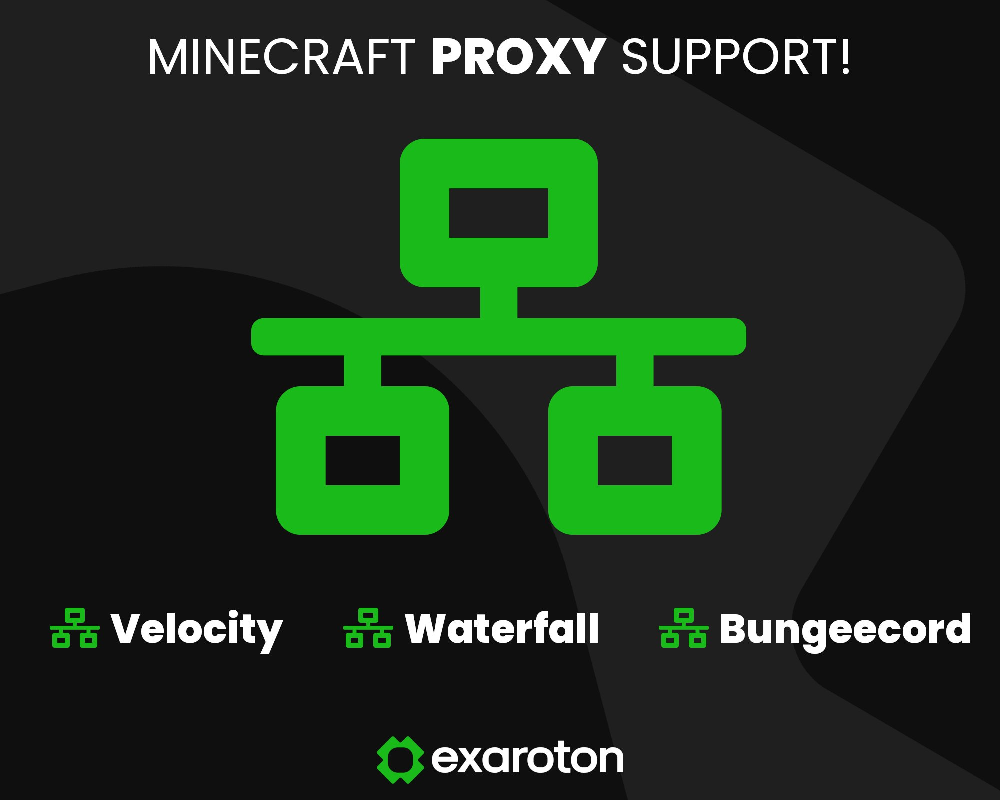

Optimización y Seguridad para Redes
🚀 Servicio Completamente Gratuito
Configuración profesional de proxys para servidores Minecraft sin costo alguno.
SERVICIO GRATUITO
BungeeCord/Velocity
Balanceo de carga
Seguridad anti-DDoS
Compatibilidad total
Soporte básico
Configuración completa sin costos. Para plugins de seguridad premium adicionales, consulta opciones de pago.
📞 Contactar para Configuración →
BungeeCord
Velocity
Waterfall
TCPShield
Load Balancing
Configuración profesional de proxys para servidores Minecraft, asegurando la estabilidad, seguridad y escalabilidad de tu red.
- Balanceo de carga avanzado - Distribución inteligente entre subservidores
- Seguridad anti-DDoS profesional - Protección de IPs y mitigación de ataques
- Compatibilidad completa - Plugins como DiscordSRV y GeyserMC integrados
- Soporte para grandes comunidades - Optimizado para miles de jugadores concurrentes
- Configuración personalizada - Adaptada a las necesidades específicas de tu servidor
- Optimización de latencia - Reducción de tiempos de respuesta y ping
- Sistema de failover - Redundancia automática para máxima disponibilidad
- Monitorización en tiempo real - Dashboard con métricas de conexión y rendimiento
Todo configurado con las mejores prácticas de la industria para mantener tu servidor seguro, rápido y listo para cualquier tipo de jugador. Configuración basada en años de experiencia con redes de alta demanda.
← Volver a Servicios